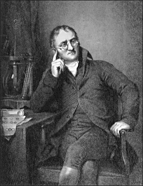

Quem foi Dalton?

John Dalton (1766-1844) foi um químico, meteorologista e físico inglês, um dos mais destacados cientistas do mundo. Descobriu a anomalia da visão das cores, conhecida como daltonismo. Foi o fundador da teoria atômica que revolucionou a química moderna
Dalton nasceu em Eaglesfield, Inglaterra, no dia 6 de setembro de 1766. Filho de um pobre tecelão manual estudou na Quaker’s School de Eaglesfield.
Ganhou reputação local de ser um gênio matemático. Com 12 anos de idade, conseguiu permissão das autoridades locais para substituir seu professor John Fletcher.
Em 1781, com 15 anos, John Dalton transferiu-se para a aldeia de Kendal, onde lecionou em uma escola fundada por seu primo George Bewley. Passou doze anos ensinando Matemática e Ciência e continuou se dedicando ao estudo do tempo.
Em 1793, após concluir sua formação acadêmica, Dalton partiu para Manchester estabelecendo-se ai definitivamente. Tornou-se professor de Matemática, Física, e Química do New College, universidade de prestígio.